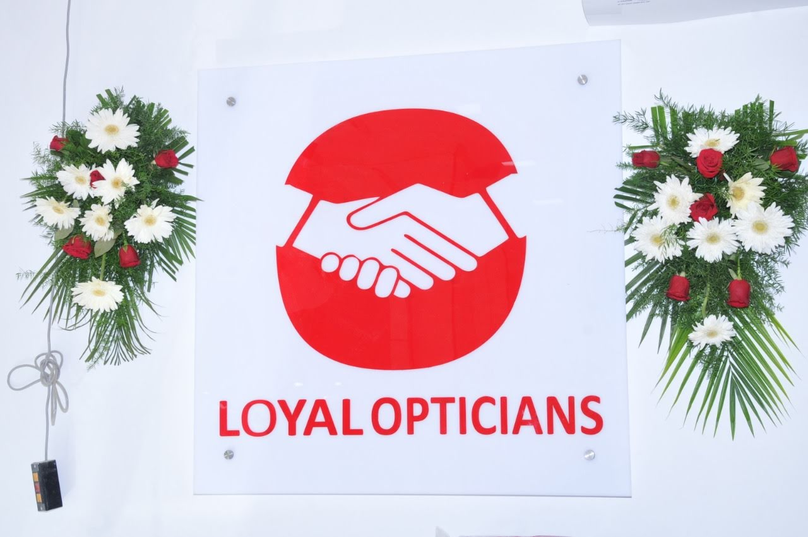
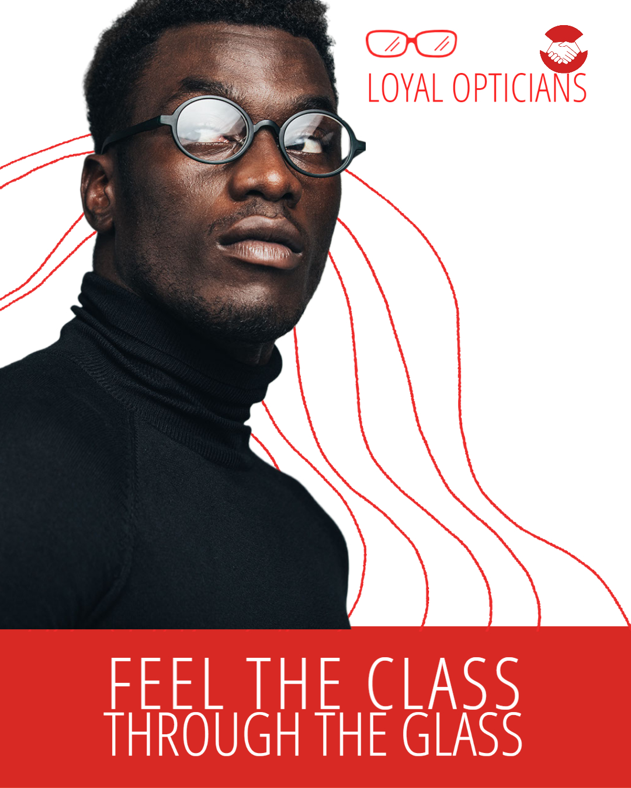

{% load static %}
<!DOCTYPE html>
<html lang="en">

<head>
    <meta charset="UTF-8">
    <meta http-equiv="X-UA-Compatible" content="IE=edge">
    <meta name="viewport" content="width=device-width, initial-scale=1.0">
    <link rel="preconnect" href="https://fonts.googleapis.com">
    <link rel="preconnect" href="https://fonts.gstatic.com" crossorigin>
    <link href="https://fonts.googleapis.com/css2?family=Poppins:wght@200&display=swap" rel="stylesheet">
    <link rel="stylesheet" href="https://maxcdn.bootstrapcdn.com/bootstrap/3.4.1/css/bootstrap.min.css">

<!-- jQuery library -->
<script src="https://ajax.googleapis.com/ajax/libs/jquery/3.6.0/jquery.min.js"></script>

<!-- Latest compiled JavaScript -->
<script src="https://maxcdn.bootstrapcdn.com/bootstrap/3.4.1/js/bootstrap.min.js"></script>
    <script>
        function myFunction() {
            var x = document.getElementById("myTopnav");
            if (x.className === "topnav") {
                x.className += " responsive";
            } else {
                x.className = "topnav";
            }
        }
    </script>
    <title>Loyal Opticals</title>
    <style>
        body {
            margin: 0px;
            font-family: 'Poppins', sans-serif;
        }

        /* Add a red background color to the top navigation */
        .topnav {
            padding: 20px;
            background-color: rgba(224, 34, 35, 255);
            overflow: hidden;
        }

        /* Style the links inside the navigation bar */
        .topnav a {
            float: left;
            display: block;
            color: #f2f2f2;
            text-align: center;
            padding: 14px 16px;
            text-decoration: none;
            font-size: 17px;
        }

        /* Add an active class to highlight the current page */
        .active {
            background-color: #aa5a04;
            color: white;
        }

        /* Hide the link that should open and close the topnav on small screens */
        .topnav .icon {
            display: none;
        }

        /* Dropdown container - needed to position the dropdown content */
        .dropdown {
            float: left;
            overflow: hidden;
        }

        /* Style the dropdown button to fit inside the topnav */
        .dropdown .dropbtn {
            font-size: 17px;
            border: none;
            outline: none;
            color: white;
            padding: 14px 16px;
            background-color: inherit;
            font-family: inherit;
            margin: 0;
        }

        /* Style the dropdown content (hidden by default) */
        .dropdown-content {
            display: none;
            position: absolute;
            background-color: #f9f9f9;
            min-width: 160px;
            box-shadow: 0px 8px 16px 0px rgba(172, 26, 26, 0.2);
            z-index: 1;
        }

        /* Style the links inside the dropdown */
        .dropdown-content a {
            float: none;
            color: red;
            padding: 12px 16px;
            text-decoration: none;
            display: block;
            text-align: left;
        }

        /* Add a dark background on topnav links and the dropdown button on hover */
        .topnav a:hover,
        .dropdown:hover .dropbtn {
            background-color: white;
            color: red;
        }

        /* Add a grey background to dropdown links on hover */
        .dropdown-content a:hover {
            background-color: #ddd;
            color: red;
        }

        /* Show the dropdown menu when the user moves the mouse over the dropdown button */
        .dropdown:hover .dropdown-content {
            display: block;
        }

        /* When the screen is less than 600 pixels wide, hide all links, except for the first one ("Home"). Show the link that contains should open and close the topnav (.icon) */
        @media screen and (max-width: 600px) {

            .topnav a:not(:first-child),
            .dropdown .dropbtn {
                display: none;
            }

            .topnav a.icon {
                float: right;
                display: block;
            }
        }

        /* The "responsive" class is added to the topnav with JavaScript when the user clicks on the icon. This class makes the topnav look good on small screens (display the links vertically instead of horizontally) */
        @media screen and (max-width: 600px) {
            .topnav.responsive {
                position: relative;
            }

            .topnav.responsive a.icon {
                position: absolute;
                right: 0;
                top: 0;
            }

            .topnav.responsive a {
                float: none;
                display: block;
                text-align: left;
            }

            .topnav.responsive .dropdown {
                float: none;
            }

            .topnav.responsive .dropdown-content {
                position: relative;
            }

            .topnav.responsive .dropdown .dropbtn {
                display: block;
                width: 100%;
                text-align: left;
            }
        }

        .row {
            display: flex;
        }

        .col {
            margin: 3px;
        }
    </style>

</head>
<header>
    <div class="topnav" id="myTopnav">
        <a href="#home"><b>Loyal Opticainas</b></a>
        <div class="dropdown">
            <button class="dropbtn">Eyeglasses
                <i class="fa fa-caret-down"></i>
            </button>
            <div class="dropdown-content">
                <a href="#">Link 1</a>
                <a href="#">Link 2</a>
                <a href="#">Link 3</a>
            </div>
              <link rel="icon" type="image/x-icon" href="../../static/image/logo.png">
        </div>
        <div class="dropdown">
            <button class="dropbtn">Contact Lenses
                <i class="fa fa-caret-down"></i>
            </button>
            <div class="dropdown-content">
                <div class="row">
                    <p class="col">
                        I'm looking for
                    </p>
                    <p>

                    </p>
                </div>

            </div>
        </div>
        <div class="dropdown">
            <button class="dropbtn">Home service
                <i class="fa fa-caret-down"></i>
            </button>
            <div class="dropdown-content">
                <a href="#">Link 1</a>
                <a href="#">Link 2</a>
                <a href="#">Link 3</a>
            </div>
        </div>
        <a href="javascript:void(0);" class="icon" onclick="myFunction()">&#9776;</a>
        <a href="">Login</a>
    </div>

</header>

<body>
    <div class="container">
        <br>
        <div id="myCarousel" class="carousel slide" data-ride="carousel">
            <!-- Indicators -->
            <ol class="carousel-indicators">
              <li data-target="#myCarousel" data-slide-to="0" class="active"></li>
              <li data-target="#myCarousel" data-slide-to="1"></li>
              <li data-target="#myCarousel" data-slide-to="2"></li>
            </ol>
          
            <!-- Wrapper for slides -->
            <div class="carousel-inner">
              <div class="item active">
                
              </div>
          
              <div class="item">
                
              </div>
          
              <div class="item">
                
              </div>
            </div>
          
            <!-- Left and right controls -->
            <a class="left carousel-control" href="#myCarousel" data-slide="prev">
              <span class="glyphicon glyphicon-chevron-left"></span>
              <span class="sr-only">Previous</span>
            </a>
            <a class="right carousel-control" href="#myCarousel" data-slide="next">
              <span class="glyphicon glyphicon-chevron-right"></span>
              <span class="sr-only">Next</span>
            </a>
          </div>
      </div>
      

</body>

</html>
